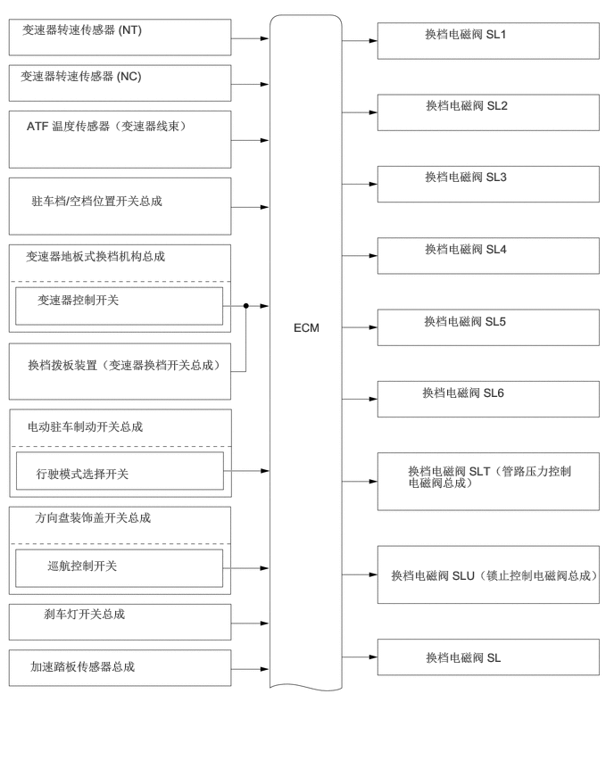

0.26,0.26 2.604,0.615
2.333,0.344
10
false
变速器转速传感器 (NT)
3.427,3.74 3.906,4.073
0.469,0.323
10
false
ECM
0.24,0.802 2.583,1.156
2.333,0.344
10
false
变速器转速传感器 (NC)
0.313,1.385 2.635,2.156
2.313,0.76
10
false
ATF 温度传感器（变速器线束）
0.365,2.26 2.146,2.76
1.771,0.49
10
false
驻车档/空档位置开关总成
0.302,2.906 2.521,3.281
2.208,0.365
10
false
变速器地板式换档机构总成
0.438,3.417 2.271,3.781
1.823,0.354
10
false
变速器控制开关
0.323,4.177 2.833,5
2.5,0.813
10
false
换档拨板装置（变速器换档开关总成）
0.406,5.958 2.385,6.354
1.969,0.385
10
false
方向盘装饰盖开关总成
0.552,6.521 1.979,6.958
1.417,0.427
10
false
巡航控制开关
0.51,7.083 2.354,7.5
1.833,0.406
10
false
刹车灯开关总成
0.354,7.698 2.646,8.073
2.281,0.365
10
false
加速踏板传感器总成
4.969,7.594 6.51,8.031
1.531,0.427
10
false
换档电磁阀 SL
4.563,6.635 7.167,7.208
2.594,0.563
10
false
换档电磁阀 SLU（锁止控制电磁阀总成）
4.76,5.417 6.75,5.885
1.979,0.458
10
false
换档电磁阀 SLT（管路压力控制电磁阀总成）
4.927,4.5 6.469,4.938
1.531,0.427
10
false
换档电磁阀 SL6
4.948,3.667 6.49,4.104
1.531,0.427
10
false
换档电磁阀 SL5
4.958,2.823 6.5,3.26
1.531,0.427
10
false
换档电磁阀 SL4
4.958,1.979 6.5,2.417
1.531,0.427
10
false
换档电磁阀 SL3
4.969,1.146 6.51,1.583
1.531,0.427
10
false
换档电磁阀 SL2
4.958,0.313 6.5,0.75
1.531,0.427
10
false
换档电磁阀 SL1
0.313,4.896 2.813,5.302
2.49,0.396
10
false
电动驻车制动开关总成
0.417,5.448 2.177,5.813
1.75,0.354
10
false
行驶模式选择开关